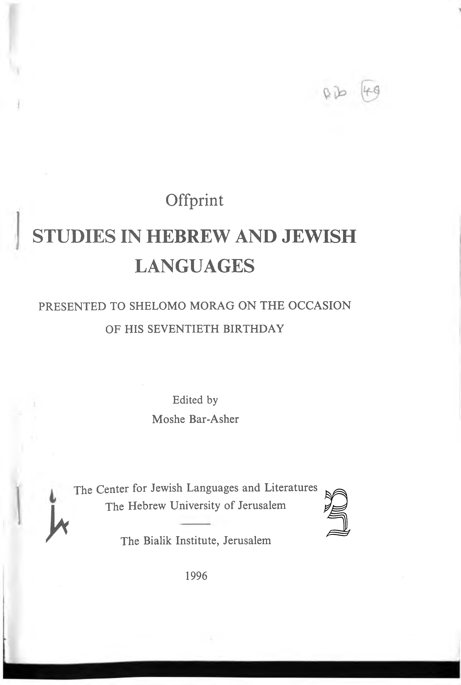

07a.46 Gentilics and Geography
Offprint
STUDIES IN HEBREW AND JEWISH
LANGUAGES
PRESENTED TO SHELOMO MORAG ON THE OCCASION
OF HIS SEVENTIETH BIRTHDAY
Edited by
Moshe Bar-Asher
The Center for Jewish Languages and Literatures
The Hebrew University of Jerusalem
The Bialik Institute, Jerusalem
1996
E. J. Revell
GENTILICS AND GEOGRAPHY
-
The influence, on a language, of the society that uses it is now well established as an important area of linguistic study. Our limited knowledge of ancient society is a handicap to very extensive exploration of this approach to the languages of the ancient Near East. Nevertheless, we can see, in the use of deferential language for instance, the same sort of patterns which appear in spoken languages, so it is a reasonable assumption that such exploration will be rewarding, within the possible limits. The present paper, a study of a particular type of epithet, the gentilic, is an attempt to show the sort of information that a sociolinguistic approach to the biblical language can provide.
-
The groups represented by gentilics are of three different types: nation, kin-group, or town. The term ’nation’ is used for groups represented as culturally distinct from each other, and typically autonomous, at least to some extent, as ’Canaanite’ and the other groups which occupied the territory to be conquered by Israel, the distinct groups which lived alongside Israel within that territory, as ’Kenite’, or the nations which surrounded that territory, as ’Ammonite’. The use of these names varies only with the changing political realities.
-
Gentilics are also used to denote members of the community referred to as Israel in contrast to members of other nations. The term ’Israelite’ (ילארשי) itself is used in this way only in Lev 24, 10, 11, (apart
*113
Gentilics and Geography
[2]
from 2 Sam 17, 25, on which see §12)? ’Hebrew’ (ירבע) is used in the Pentateuch and in 1 Samuel. It is also used in Jeremiah 34, 9, 14, no doubt in order to recall the legal terminology represented in Deut 15, 12. However, Jeremiah’s usual word for a member of the community is ’Judaean’ (ידוהי), and this is also used in 2 Kgs 16, 6, 25, 25 (cf. תידוהי — the language ’Judaean’— in 2 Kgs 18, 26), Zech 8, 23, and in Ezra and Nehemiah.2 In 2 Kgs 17, 29, the people of the northern kingdom are referred to as ’Samaritans’ (3.(םיבורמש
-
Gentilics representing kin groups which are not classed as ’nations’, are used only of groups forming part of the community of Israel. They may represent ’tribes’, as ’Manassite’ (ישנמ), sub-tribal units, as ’Abiezrite’ (ירזעיבא), or ’families’ as ’Zarhite’ (יחרז). Gentilics representing towns also typically denote towns within the community, as ’Anathothite’ (יתתכע). Towns outside the area of settlement which are represented by gentilics are probably to be thought of as city states, i.e. as ’nations’, as Tyre, and no doubt also the Philistine cities. Gentilics based on towns within Israel are, not surprisingly, almost completely restricted to texts dealing with the periods of settlement and monarchy. The majority occur in the books of Judges, Samuel and Kings. For this reason the paper concentrates on these books, here called ’the corpus’.
-
A gentilic may be used as a collective, denoting a population group, as often in Judges 1. The plural form is also used with the same value, as always for ’the Philistines’. It may designate an individual member of such a group, as ’the Timnite’ (יתמתה, Judg 15, 6), or it may
1 The term ’man of Israel’ (
לארשי in Judg 7, 14, but this use is rare.
שיא
) also sometimes denotes an individual, as
2 The corresponding feminine form (הידוהי), used in 1 Chr 4,18 reflects this later usage, not the earlier. The actual application of ’Judaean’ no doubt differs in different contexts.
3 Cf. the title ’King of Samaria’ used for Ahab (1 Kgs 21, 1), and Ahaziah (2 Kgs 1, 3). Terms corresponding to ינורמש, and also to ילארשי and ידוהי, are used in contemporary cuneiform and other extra-biblical sources. See L. Koehler und W. Baumgartner, Hebräisches und Aramäisches Lexicon zum Alten Testament, (dritte Auflage), Leiden 1967-1990.
*114
[3]
E. J. Revell
אוה
be used, either as attributive/appositive, or as predicate, to ascribe a characteristic to an individual already designated, as ’He was a Calebite’ יבלכ , qere 1 Sam 25, 3). A gentilic is also often used as an epithet ( following a personal name, to provide further identification of the individual named, as ’Ahitophel the Gilonite’ (2 , Sam 15, 12).
לפתיחא
יכליגה
- The most common type of epithet used to identify an individual, within the corpus composed of Judges, Samuel and Kings or outside it, is a ’patronymic’. This indicates relationship to some important member of the family, usually father or husband. It may be asked why gentilics representing the place of residence should be used unless the person designated is a foreigner, since a patronymic places the individual both within the local community and in relation to the kin-based organization of the community. The most probable reason is that, as in other societies, families which were wealthy or politically active had names which were worth using for identification; others did not. The designations of the prophet Jeremiah appear to illustrate the relative status implied by a gentilic epithet. The prophet is introduced with a , Jer 1, 1), patronymic epithet, as Jeremiah ben Hilkaiah ( but he is usually distinguished as ’Jeremiah the prophet’ (20 ,איבנה cases), using an occupation term, as is common with high status occupations. A gentilic epithet is used only in Jer 29, 27, where an opponent implies that the authorities should have prevented him from acting as a prophet. The reference to Jeremiah as ’the Anathothite’ (יתתכעה) in this context, ignoring his family and occupation, seems to be intended to belittle him by treating him as a ’nobody’.
והימרי
והיקלח
ןב
4
ר. The use of a gentilic denoting place of residence in place of a patronymic thus shows that the person so identified is in some way an outsider or stranger to the speaker’s community. His place of residence
4 Jesse was identified as ’the Bethlehemite’ (
), presumably because his family was ’unknown’. It became prominent, so that his son, who also came from Bethlehem, is David ben Yissai.
ימחלה
תיב
*115
Gentilics and Geography
[4]
is his most significant characteristic. The place named in such an epithet must be distinctive, and so not central to the community, or it could not serve for identification.5 At the same time, an epithet of this sort is intended to place the individual within the network of relationships which constitute the community. The place of residence must be reasonably well known in the community to be used in this way.
- This view of the gentilics is borne out by the map (see infra) showing the locations they represent. Only towns represented by gentilics which occur in the corpus (the books of Judges, Samuel and Kings) are shown on the map. The moderate level of accuracy with which they can be located is adequate for the purpose. Where the precise site of a town is not known, the town can usually be placed within a limited area. The territory occupied by larger kinship groups or nations represented by gentilics can generally be located with reasonable accuracy. Smaller ’family’ groups within Israel cannot be reliably located; fortunately gentilics based on such groups are rare in the corpus. The few cases in which location is wholly unknown are ignored on the map.
6
- The majority of towns represented by gentilics are located within a ’central area’ more or less coterminous with the limits of the Kingdom of Judah. Most of these settlements appear to have been small.
7
5 It is noteworthy that no gentilic identifies an individual as a resident of one
of the capital cities, as Hebron, Jerusalem, or Samaria.
6 In locating the towns in question, I have relied generally on Koehler-Baumgartner (see n.3), supplemented by the Student Map Manual, Jerusalem 1979, and Z. Kallai, Historical Geography of the Bible, Jerusalem 1986. The only case in which uncertainty over location would seriously affect the following argument is that of Harod (#11, 2 Sam 23, 25). The sources named relate this to the spring of Harod, near Beth Shean. B. Mazar in "The military élite of king David", Vetus Testamentum 13 (1963), pp. 315 n. 3, relates it to a site near Bethlehem. His analysis of the list in which it appears shows this to be more likely in that particular context, so I have followed it.
7 Mazar (’Military élite’, 318) notes that most of David’s heroes in the list in 2 Sam 23 and 1 Chr 11 come from the same area. The prominence of this area is not limited to David’s reign, however. Nearly half of the gentilics
*116
[5]
E. J. Revell
Settlements on the periphery of this area and beyond which are represented by gentilics appear to have been cities of major importance. This certainly true of Gath (#8), Gezer (#9), and Shunem (#25), which are mentioned in the Amarna letters. Ekron (#21) was a city state at the time of the Assyrian campaigns. Shiloh (#24) was site of an ancient shrine. Jezreel (#13) had a royal residence (1 Kgs 21, 1, 2 Kgs 8, 29). Nothing is known of Abel Meholah (#16) and Pirathon (#23). It seems clear, then, that locations inside the central area represented by gentilics were small towns; those outside were, for the most part at least, larger cities.
-
Gentilics representing population groups which are used as epithets in the corpus show a similar pattern. Those closer to the central area typically represent smaller groups, ,families’ or clans’. A few of the twelve tribes are represented, although only Gad and Zebulun, two of the smaller tribes, are used for primary identification, i.e. as the first or only epithet used after a personal name (Judg 12, 11-12, 2 Sam 23, 36). Outside the area allocated for the settlement of Israel, the groups represented by gentilics are (by definition) ’nations’. Those on the periphery of that territory are typically small units, as the Kenites, Arkites, and Maakah. Those more distant are larger, as Egypt, Edom, and Aram.
-
It is clear that, in general terms, the gentilics used in the corpus reflect a view of the world centred on Judah, very possibly on Jerusalem. In general, the farther one gets from that centre, the larger the entity represented by the gentilic. This is a natural way to view the world. Within one’s own town, people are distinguished by the street they live in, within the province, by the town, within the country, by the province, and so on. The more distant the location, the larger is the entity used for identification. The plausibility of viewing this pattern as reflecting real usage is increased by the observation that distance from the centre is measured in terms of ease of communication, not by units
considered here come from material on other periods.
*117
Gentilics and Geography
[6]
of length. The Jordan acted as a barrier. The gentilics based on place of residence which are used in 1 Chr but not in the corpus reflect the same pattern, in so far as their location can be identified. The only unusual example is ’Sharonite (1 יכורש Chr 27, 29) which presumably represents a district (not a town or population group) on the coastal plain, northwest of the central area.
- Only one gentilic used in the corpus clearly fails to fit the pattern described: ’the Israelite’ (2 ילארשיה Sam 17, 25), epithet of Yitra, father of Amasa, Absalom’s commander in chief. It is generally recognized that this term cannot be original. The replacements suggested do fit the ,יכרא( standard pattern.8 The gentilics ’Arkite’ and ’Jebusite clearly represent ’nations’ -- population groups of distinct cultural origin living within the territory occupied by Israel. The same is suggested for ’Yithrite’ (9(ירתי and ’Ezrahite’ (10.(יחרזא The latter term is usually regarded as based on the name Zerah (חרז), which presents fewer problems. If this is so, it represents a kin group, but it is likely that occupation, membership in a musical guild, was the main reason for the use of the term, and not kinship as such.11 The designation ’the
)יסובי
’
8 The usual suggestion is ’the Ishmaelite’ (ילאעמשיה, as 1 Chr 2, 17). The ingenious suggestion of J. Levenson and B. Halpern in ’The Political Importance of David’s Marriages’ {Journal of Biblical Literature 99 (1980), p. 512) that the original reading was ’the Jezreelite’ (ילאערזיה) requires some support for the view that a devoiced ז (zayin) would be represented by ש (sin).
9 Mazar ’Military élite’ p. 319 n.l. Koehler-Baumgartner suggest derivation
from the town of Yattir.
10 W. F. Albright, Archaeology and the Religion of Israel, Baltimore 1968, 5th ed., p. 127 and p. 210 n. 95, supported by S. Mowinckel in "Psalms Criticism between 1900 and 1935", Vetus Testamentum 5 (1955), p. 19. The suggested meaning of the epithet, ’native’, might be used in a culture in which aboriginals rarely achieved significant status in the superstrate culture, but there is no reason to believe this was true of Israel, cf. Hushai the Arkite.
11 On these guild-names see B. Levine, "The Netïnîm", Journal of Biblical Literature 82 (1963), p. 211. The argument is not that kinship was nonexistent, but that the use of the gentilic was a professional title, motivated by the occupation implied, not by the kinship itself. The same seems to be true of the term ’Levite’ (יול) used in the corpus. Thus it does not even occur in Judg 18, 30, in the genealogy of the man introduced in Judg 17, 7 as a
*118
[7]
E. J. Revell
Kerosite’ (‘,□*!pH Arad letter 18, 5) is possibly a parallel case. The gentilic ’Ahohite’ (,,nnK, 2 Sam 23, 9) representing a Benjaminite family (1 Chr 8, 4), may be the only case in the corpus of the use of a gentilic based on kinship with no additional motivation.
-
It was assumed, as a general rule, that the residents of a town were blood relations. Thus in 2 Sam 15, 2, the question ’What city are you from?’ is answered ’I am from such and such a tribe’. The distinction between place of residence and kinship as a basis for gentilics does not reflect the way the society viewed itself. As styles of formal designation, however, gentilics based on residence and on kinship are (as already noted) characteristic of different parts of the bible, no doubt reflecting their different functions.12 Gentilics based on town names function mainly as epithets used to identify individuals for the practical purposes of daily life. Kinship terminology relates to the organization of the community as a whole. For this reason, the use of kinship terminology in the corpus is typical of situations which we would call political: the question of ability to command enough support to assume leadership of the community, as Judg 6, 15, 1 Sam 9, 21; the fomentation of rebellion (2 Sam 15, 2, 10), attachment to a group predisposed to oppose the leader (2 Sam 16, 11, cf. the reference to the ’House of Saul’ in 16, 5, 1 Kgs 11, 26).
-
It may be felt that the argument that these gentilics reflect a Judah-centred point of view is too sweeping a generalization. The texts in which they occur cover a considerable period of history. Gentilics representing towns north of Bethel (#4) the northernmost town in the
Levite.
12 The use of gentilics representing towns within Israel is restricted to texts representing the periods of settlement and monarchy. Besides the corpus, they occur in those parts of Chronicles dealing with the reign of David, and, occasionally, in the writings of prophets active during the monarchy (as Mic 1,1, Nahum 1, 1). The use of gentilics based on kinship within Israel is common in Numbers 26, in some parts of Nehemiah, and in the parts of Chronicles which do not deal with David’s reign. They occur sporadically elsewhere.
*119
Gentilics and Geography
[8]
main group, might reflect different community centres, characteristic of different sources. The most likely possibilities are Jezreel (#13) which appears only as the home of Naboth in 1 Kings 21 and 2 Kings 9, and Shiloh (#24), mentioned in 1 Kgs 11, 29, 12, 15, 15, 29. These passages might derive from northern sources, but their language suggests that, if they do, they have been adapted at least in some particulars, to a Judaean viewpoint.13 The other gentilics representing northerly towns occur in materials related to David.14 These gentilics may, then, derive from different sources, but it is reasonable to suggest that they reflect a single viewpoint, that of a community centred in Judah.
-
Seen in this way, these gentilics provide a basis for speculation on the social background of the texts in the corpus, but do not add much to our understanding of those texts. Studies of this sort do, however, provide accurate information on linguistic usage, information which is not available for many features of biblical Hebrew. This information can rarely show the necessary solution to a problem, but it often does have a significant bearing on questions raised about particular readings, and should be gathered for that reason. An example where a gentilic is in question occurs in the designation of Elijah in 1 Kgs 17, 1.
-
Elijah is introduced in 1 Kgs 17, 1 as
והילא רעלג ,Elijah the Tishbite from the settlers of Gilead’. The designation is almost universally emended to Elijah the Tishbite, from Tishbeh of Gilead, on the argument that the use of יבשת ’settlers’ is not suitable to this context.15
יבשתמ
יבשתה
13 Kings are referred to in these passages either in a way suitable for any king, as ,Ahab King of Samaria’ (1 Kgs 21,1, cf. ’Ben Hadad King of Aram’, 1 Kgs 20, 1), or by personal name, not as ’the king’, the common way of referring to a king of one’s own community.
14 Pirathon (#23) appears in the list of David’s officials in 2 Samuel 23, and Abel Meholah (#16) and Shunem (#25) both appear in the so-called ’Court History’.
15 A typical argument on this point is presented by J. Simons, The Geographical and Topographical Texts of the Old Testamentי Leiden 1959, p. 359 n. 253 (to #897). The emendment he proposes differs from that usually suggested, but it, too, would be without parallel.
*120
נ9]
E. J. Revell
יתשלפה
ומש תגמ
- As far as I know, the corpus contains four other designations which show the same formal pattern as that of Elijah in 1 Kgs 17, 1: name + gentilic epithet, followed by a prepositional phrase indicating ’Goliath the Philistine (was his תילג place of origin: ’Barzillai the name) from Gath’ (1 Sam 17, 23); יעמש ןב ארג ןב Gileadite from Rogelim’ (2 Sam 17, 27); [ םירוחבמ ’Shimei ben Gera the Benjaminite (who was) from Bahurim’ (2 ’Jeroboam ben Sam 19, 17, 1 Kgs 2, 8); Nebat an Ephraimite from Zeredah’ (1 Kgs 11, 26). In these cases, the gentilic, which fits the pattern described above, gives a general designation, the prepositional phrase a more specific one. The emended form of 1 Kgs 17, 1 does not conform to this pattern.
ידעלגה רשא[
ילזרב ינימיה
ןב טבנ
םילגרמ
הדרצה
םעברי
יתרפא
ןמ
16
םחל
שיא
תיבמ
הזה
יתרפא
- A related case occurs in
’This הדוהי Ephrathite man from Bethlehem-Judah’ (1 Sam 17, 12, cf. Ruth 1, 2). This could be a further example of the same pattern if Ephrathah designates a district rather than a town. If the usual view (based on Gen 48, ר etc.) is followed, Bethlehem is a more common name for the town of Ephrathah. In this case, the prepositional phrase specifies the reference of the gentilic ’the Ephrathite’ (which could relate to the tribe of Ephraim). The emended form of 1 Kgs 17, 1 does not fit this pattern either, as the name Tishbeh is not clarified, but simply repeated. If the purpose were to indicate that Tishbeh is located in Gilead, the evidence ’Elijah the suggests that the form should be Gileadite from Tishbeh’.
ידעלגה
הבשתמ
והילא
- Outside the corpus, a prepositional phrase following a name with gentilic epithet may present family origin (Job 32, 2, 1 Chr 27, 10, 12, 14), but the emended form of the designation of Elijah in 1 Kgs 17, 1
16 This is argued by F. Willesen in Vetus Testamentum 8 (1958), p. 98 n. 3. This would, however, conflict with the pattern of use of gentilics described above.
*121
